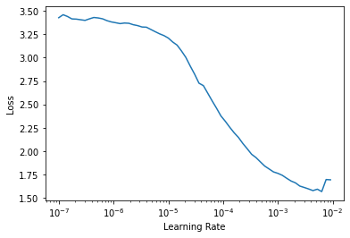

2. VOC Parser with FasterRCNN¶
[1]:
!pip install -q git+git://github.com/fastai/fastai2.git --upgrade
!pip install -q git+git://github.com/lgvaz/mantisshrimp.git
!pip install -q -U 'git+https://github.com/cocodataset/cocoapi.git#subdirectory=PythonAPI'
!pip install -q albumentations --upgrade
[2]:
from mantisshrimp import *
from mantisshrimp.imports import *
from mantisshrimp.hub.voc import *
import albumentations as A
[3]:
source = get_voc_data()
[4]:
parser = VOCAnnotationParser(
annotations_dir=source / "Annotations",
images_dir=source / "JPEGImages",
categories=VOC_CATEGORIES,
)
[5]:
splitter = RandomSplitter([0.8, 0.2])
train_records, valid_records = parser.parse(splitter)
[6]:
train_transforms = AlbuTransform([A.HorizontalFlip()])
[7]:
train_ds = Dataset(train_records, train_transforms)
valid_ds = Dataset(valid_records)
[8]:
model = MantisFasterRCNN(num_classes=len(VOC_CATEGORIES)+1)
[9]:
def get_dataloader(model, dataset, shuffle=False):
return model.dataloader(dataset, batch_size=2, num_workers=2, shuffle=shuffle)
train_dl = get_dataloader(model, train_ds, shuffle=True)
valid_dl = get_dataloader(model, valid_ds)
[10]:
metrics = [COCOMetric(valid_records, bbox=True, mask=False)]
creating index...
index created!
[11]:
from mantisshrimp.engines.fastai import *
[12]:
learn = rcnn_learner(dls=[train_dl, valid_dl], model=model, metrics=metrics)
/usr/local/lib/python3.6/dist-packages/fastai2/callback/core.py:29: UserWarning: You are setting an attribute (loss) that also exists in the learner. Please be advised that you're not setting it in the learner but in the callback. Use `self.learn.loss` if you would like to change it in the learner.
warn(f"You are setting an attribute ({name}) that also exists in the learner. Please be advised that you're not setting it in the learner but in the callback. Use `self.learn.{name}` if you would like to change it in the learner.")
[13]:
learn.lr_find(show_plot=False)
learn.recorder.plot_lr_find(skip_end=1)
/usr/local/lib/python3.6/dist-packages/torch/nn/functional.py:2854: UserWarning: The default behavior for interpolate/upsample with float scale_factor will change in 1.6.0 to align with other frameworks/libraries, and use scale_factor directly, instead of relying on the computed output size. If you wish to keep the old behavior, please set recompute_scale_factor=True. See the documentation of nn.Upsample for details.
warnings.warn("The default behavior for interpolate/upsample with float scale_factor will change "
/pytorch/torch/csrc/utils/python_arg_parser.cpp:756: UserWarning: This overload of nonzero is deprecated:
nonzero(Tensor input, *, Tensor out)
Consider using one of the following signatures instead:
nonzero(Tensor input, *, bool as_tuple)

[ ]:
learn.fine_tune(3, 5e-4)
0.00% [0/1 00:00<00:00]
| epoch | train_loss | valid_loss | COCOMetric | time |
|---|
9.81% [224/2284 03:03<28:07 0.4141]
/usr/local/lib/python3.6/dist-packages/torch/nn/functional.py:2854: UserWarning: The default behavior for interpolate/upsample with float scale_factor will change in 1.6.0 to align with other frameworks/libraries, and use scale_factor directly, instead of relying on the computed output size. If you wish to keep the old behavior, please set recompute_scale_factor=True. See the documentation of nn.Upsample for details.
warnings.warn("The default behavior for interpolate/upsample with float scale_factor will change "